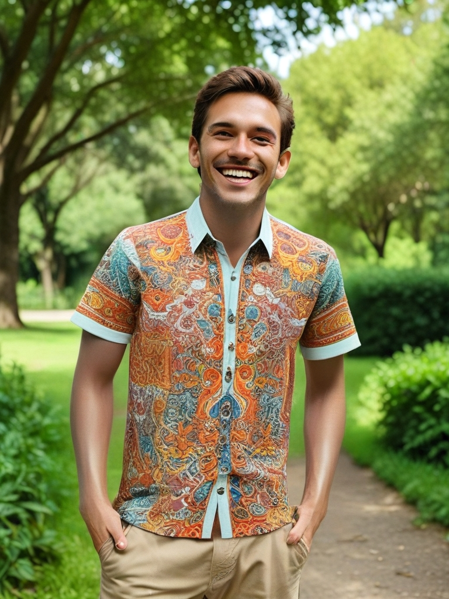

Guía para Usar la Función de Generación de Moda
La función de Generación de Moda en AiCasso te permite vestir a alguien con un atuendo específico, como una camisa, un vestido o pantalones. Simplemente describe lo que deseas y observa cómo AiCasso aplica la prenda a la persona en la imagen.
Cómo Funciona:
Entrada 1 - Imagen de la Persona:
Entrada 2 - Prenda de Ropa:
Indicación:
"Chico usando una camisa"
Resultado:

Parámetros Opcionales
Si deseas agregar tu propio estilo o asegurarte de que el resultado sea justo como lo quieres, puedes ajustar estas configuraciones:
- Indicación Negativa: Si hay algo que no quieres en la imagen, simplemente menciónalo aquí. Déjalo en blanco si estás bien con lo que AiCasso genere.
- Tipo de Tela: Indica a AiCasso si te estás enfocando en la parte superior, parte inferior o vestidos. Si no estás seguro, por defecto se enfoca en la parte superior.
- Número de Pasos de Denoising: Esto decide cuán suave y pulida se ve la imagen. Puedes elegir entre 21, 31 o 41 pasos, siendo 21 el valor por defecto. Más pasos generalmente significan un aspecto más refinado.
- Escala de Guía: Esto ayuda a que la imagen se adhiera más a tu descripción. Puedes configurarlo de 1 a 20, siendo 7 el valor por defecto. Números más altos significan que AiCasso seguirá tu indicación más de cerca.
¡Recuerda, estas configuraciones son opcionales! AiCasso es bastante inteligente y puede entender lo que quieres decir incluso si no obtienes cada detalle perfecto. ¡Diviértete y deja fluir tu creatividad!